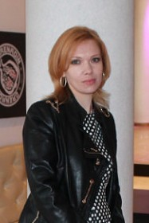

Методическая тема:Совершенствование образовательного процесса через повышение профессионального мастерства педагогов в условиях перехода на профильное обучение на III ступени общего среднего образования.
Цель:Создание условий для личностного и профессионального роста педагогических и руководящих кадров района.
Задачи:
Состав районного учебно-методического кабинета отдела образования, спорта и туризма Быховского райисполкома
|
Костусева Ольга Сергеевна 
|
Заведующий учебно-методическим кабинетом, тел. (02231)58-071 |
Осуществляет общее руководство работой учебно-методического кабинета, курирует работу по повышению квалификации педагогов района на базе МГОИРО, АПО и других учреждений дополнительного образования взрослых; координирует организацию участия педагогов района в областных и республиканских семинарах и других мероприятиях в межкурсовой период, работу методического совета; создает условия для проведения сертификации педагогических кадров учреждений общего среднего образования; осуществляет организацию и планирование работы районных методических формирований учителей физики и астрономии, химии и биологии, информатики, географии, районной Школы молодого педагога, методическое сопровождение образовательного процесса по физике, астрономии, химии, биологии, географии, информатике; координирует работу с высокомотивированными учащимися; организует работу по подготовке и проведению предметных олимпиад, исследовательской деятельности учащихся; осуществляет методическое сопровождение инновационной деятельности в районе. |
|
Григоржевская Ирина Владимировна
|
Методист учебно-методического кабинета, тел.(02231)58-101 |
Осуществляет организацию и планирование работы методического формирования воспитателей группы продленного дня, постоянно действующего семинара для руководителей школьных методических формирований учителей начальных классов, учителей эстетического цикла и трудового обучения, методическое сопровождение образовательного процесса на I ступени общего среднего образования; накопление, систематизацию, учет и пополнение библиотечного фонда учреждений образования района. Проводит сбор, анализ и обобщение информации о заказах на учебники, учебно-методическую литературу от учреждений образования района, распределяет новые поступления учебников и учебно-методической литературы в соответствии с заказом и контингентом учащихся; координирует индивидуальную подписку среди работников учреждений образования Осуществляет организацию и планирование работы районного методического формирования библиотечных работников и лиц, ответственных за работу с библиотечным фондом учреждений образования. |
|
Козлова Ольга Владимировна
|
Методист учебно-методического кабинета, тел.(02231)58-101 |
Осуществляет методическое сопровождение воспитательной работы в районе. Оказывает методическую помощь заместителям директоров по воспитательной работе, педагогам-организаторам, педагогам, выполняющим функции классного руководителя. Осуществляет организацию и планирование работы районных методических формирований педагогов-организаторов, педагогов, выполняющих функции классного руководителя, постоянно действующего семинара для заместителей директоров по воспитательной работе. Формирует и контролирует выполнение программы «Профпрогноз». Организует, координирует и контролирует работу учреждений образования по профилактике правонарушений, преступлений и наркомании среди несовершеннолетних. |
|
Левицкая Светлана Александровна
|
Методист учебно-методического кабинета, тел.(02231)52-805 |
Осуществляет методическое сопровождение специального образования, социально-педагогического и психологического сопровождения в районе. Организует и планирует работу методических формирований педагогов-психологов, педагогов социальных, координирует работу методических формирований учителей-дефектологов классов интегрированного обучения и воспитания, ПКПП. Координирует работу учреждений образования по вопросам профилактики суицидального поведения среди несовершеннолетних. |
|
Осипов Александр Тимофеевич
|
Методист учебно-методического кабинета, тел.(02231)58-101 |
Осуществляет методическое сопровождение физкультурно-оздоровительной работы с учащимися в районе, образовательного процесса по учебным предметам «Физическая культура и здоровье», «Допризывная подготовка», «Медицинская подготовка». Организует и планирует работу методического формирования учителей физической культуры и здоровья, допризывной и медицинской подготовки. |
|
Малашонок Валентина Егоровна
|
Методист учебно-методического кабинета, тел.(02231)58-101 |
Осуществляет организацию оздоровления детей и подростков учреждений образования района, методическое сопровождение факультативного занятия «Здоровый образ жизни». Организует работу лагерей с дневным пребыванием учащихся и оздоровительных площадок. Осуществляет организацию и планирование работы постоянно действующего семинара по здоровому образу жизни. |
|
Баранкевич Алеся Леонидовна
|
Методист учебно-методического кабинета, тел.(02231)58-876 |
Координирует деятельность учреждений образования по вопросам семейного неблагополучия и социального сиротства, ведет контроль банка данных детей, находящихся в социально опасном положении, учёт детей, признанных нуждающимися в государственной защите, а также банк данных «Дети – сироты» Координирует и руководит работой по вопросам защиты прав и законных интересов несовершеннолетних в замещающих семьях, организует сопровождение опекунских, приёмных семей и детских домов семейного типа. |